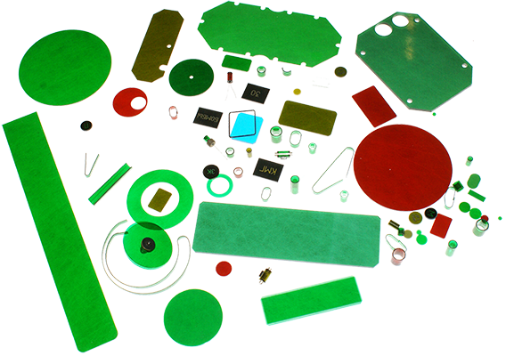
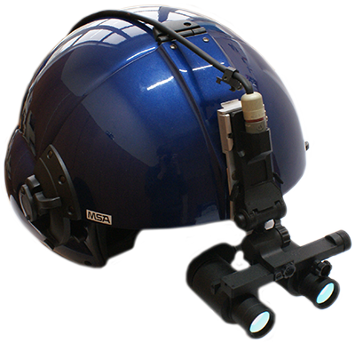
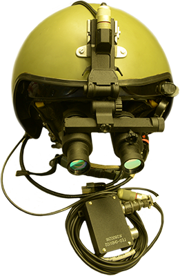

Фильтры
для адаптации светотехнического оборудования летательных аппаратов
Современная техника
ночного видения для гражданской авиации
Примеры адаптации кабины
и внешнего светотехнического оборудования «ночного» вертолета
Изделия для авиации.
Пилотажные очки ночного видения ГЕО-ОНВ1-01М, ГЕО-ОНВ1-01К
Пилотажные очки ночного видения типа «ГЕО-ОНВ1-01» обеспечивают наблюдениe закабинного пространства вертолета, в сумерках и ночью в условиях естественной ночной освещенности (ЕНО) на местности от 10-4 до 1,0 лк, а в ряде случаев – при пониженной прозрачности атмосферы (дымка, туман, дождь и др.).
- взлета и висения;
- пилотирования на высотах от 50 до 200 м с визуальным контролем подстилающей поверхности;
- заходов на посадку и выполнения посадок с касанием земли на необорудованные и неосвещенные площадки;
- наблюдения закабинного пространства без перефокусировки ОНВ;
- наблюдения показаний приборов на приборных досках вертолета мимо окуляров ОНВ;
- обнаружение и распознавание объектов на фоне подстилающей поверхности при уровне ЕНО 5*10-3 лк, на дальностях.
Пилотажные очки ночного видения типа «ГЕО-ОНВ1-01» обеспечивают экипажу возможность выполнения:
| Объект | Обнаружение, км | Распознавание, км |
| Опушка леса | 7,0 – 7,3 | 2,4 – 3,0 |
| Одиночно стоящее дерево | 2,7 – 2,9 | 1,2 – 1,8 |
| Автомобиль типа «Кунг» | 2,5 – 2,8 | 1,7 – 1,8 |
| Мачта ЛЭП | 2,3 – 2,8 | 1,8 – 2,0 |
| Столб ЛЭП (Ф0,5 х 10 м) | 1,2 – 1,6 | 0,9 – 1,1 |
Адаптация внутрикабинного и внешнего светотехнического оборудования вертолетов соответствуют требованиям российского ГОСТ РВ 5855-002-2010 и зарубежного стандарта MIL-STD-3009.
ОАО «НПО ГЕОФИЗИКА-НВ» совместно с предприятиями холдинга «Вертолеты России» проводит комплекс работ по оснащению современными очками ночного видения (ОНВ) и адаптации внутрикабинного и внешнего светотехнического оборудования вертолетов под применение ОНВ.
В интересах российских авиакомпаний гражданской авиации совместно с предприятиями холдинга «Вертолеты России» проведен комплекс работ по оснащению вертолетов гражданской авиации пилотажными очками ночного видения (ОНВ) и адаптации внутрикабинного и внешнего светотехнического оборудования вертолетов под применение ОНВ.
Предприятием выполнен весь комплекс работ по разработке, организации серийного производства адаптирующих элементов и очков ночного видения типа «ГЕО-НВ-III-ОНВ1-01М», обеспечивающих пилотирование вертолетов гражданской авиации в условиях естественной ночной освещенности.
Фильтры предназначены для адаптации внутрикабинного светотехнического (осветительного и светосигнального) оборудования летательных аппаратов, обеспечивающей пилотирование летательных аппаратов в дневное и ночное время суток с применением очков ночного видения и без применения очков ночного видения.
Фильтры изготавливаются из пластика, окрашенного в массе, различных цветов.
При адаптации внутрикабинного светотехнического оборудования летательного аппарата осуществляется замена штатных светофильтров и источников излучения на адаптированные фильтры и источники излучения с дополнительной установкой адаптированных фильтров.
Фильтры удовлетворяют требованиям зарубежного стандарта MiL-STD-3009.
| Цвет адаптированного фильтра | Зеленый | Желтый | Красный |
| Интегральный коэффициент пропускания | 16% | 19% | 17% |
| Цветовые координаты по МКО 1976 г.: U' |
0,14 | 0,27 | 0,4 |
| V' | 0,57 | 0,56 | 0,54 |
| Цветовая температура | 2000 К | 2000 К | 2000 К |
| NVIS RADIANCE | менее 1,7×10-11 | менее 1,5×10-8 | менее 1,4×10-7 |